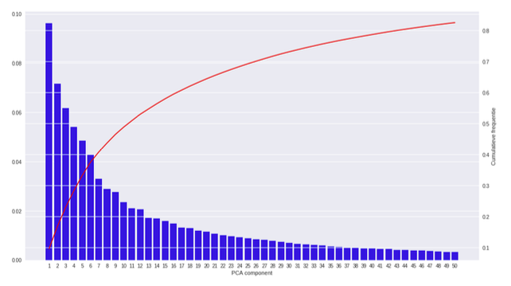
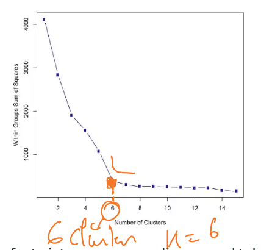
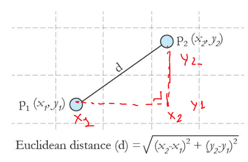
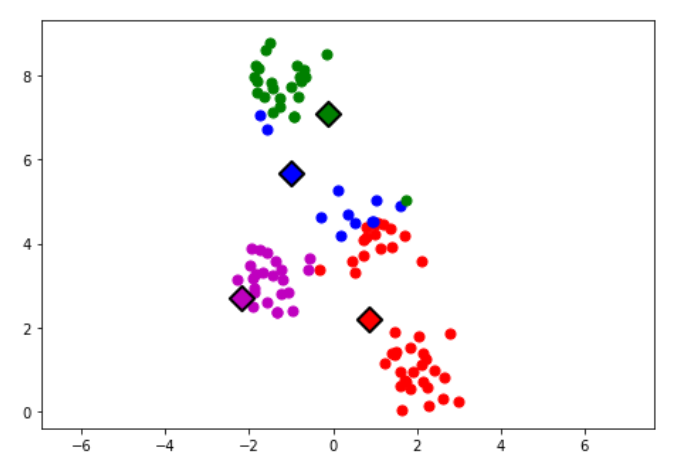
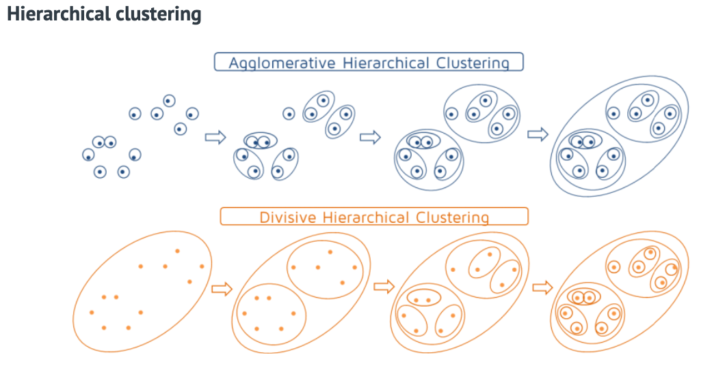
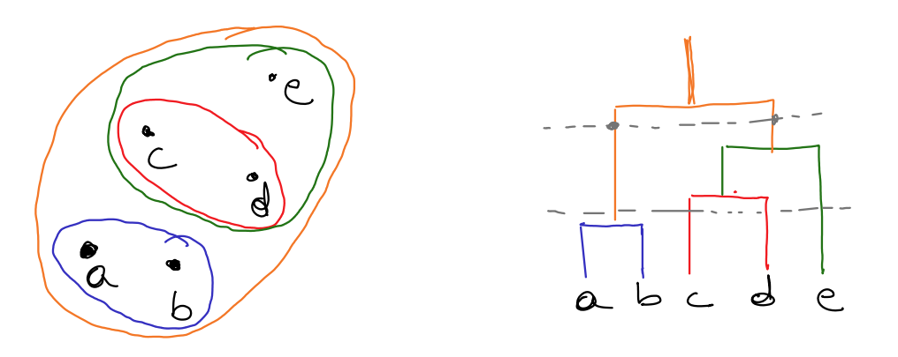
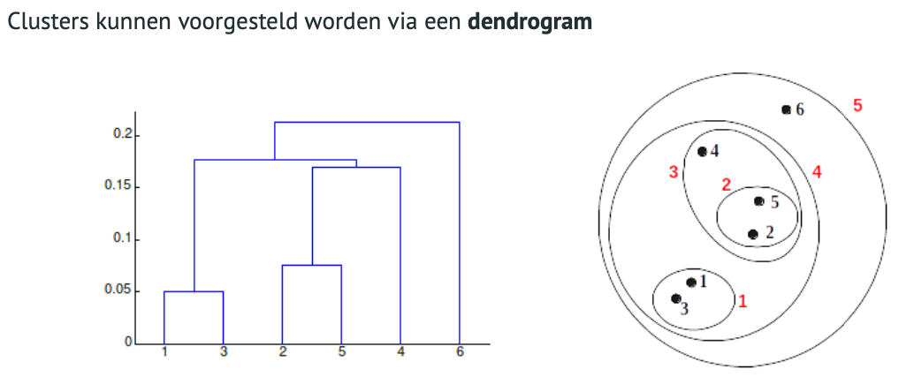
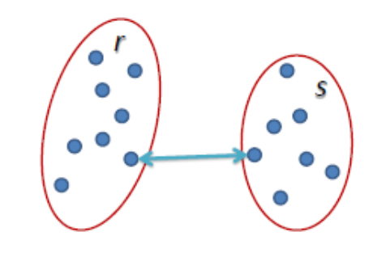
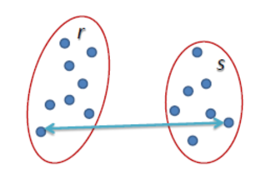
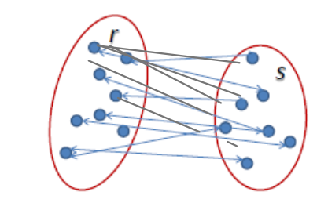

Q: Wat zijn enkele belangrijke technieken bij unsupervised learning ? Leg elk kort uit.
A: - Clustering : Gelijksoortige gegevens zoeken
- Anomaly / outlier detection : op zoek gaan naar punten die sterk afwijken van normale datapunten, op zoek naar sterk afwijkende gegevens (bijv : kerncentrales, medische sector)
- Dimensionality reduction : dimensionality redcueren. 1000de features redcueren. enkel nuttige informatie overhouden. Methode : PCA data tot de essentie brengen
- Blind signal separation : obv data achterhalen van welke bron die data afkomstig is (bijv data van verschillende sensoren van elkaar kunnen onderscheiden)
Q: Welke algoritmes heb je voor clustering ?
A: De algoritmes zijn :
Q: Wat zijn de meest gebruikte algoritmes voor dimensionality reduction ?
A: De algoritmes zijn :
- Principle Component Analysis (PCA) en Kernel PCA
- Linear Discriminant Analysis (LDA)
- Autoencoders >>> Deep learning
- Missing Values Ratio
- Low variance filter
Q: Wat is een PC bij PCA ?
A: PC is een Principle component of een nieuwe feature gevonden tijdens PCA. De eerste PC's die gevonden worden bevatten de meeste informatie/variantie. We willen namelijk zoveel mogelijk informatie overhouden per PC.

Q: Waarom dimensionality reduction ?
A: Redenen zijn :
- The curse of dimensionality
Wanneer het aantal features zeer groot is, dan wordt het moeilijk om bepaalde algoritmes effectief te trainen. Bijvoorbeeeld clustering algoritmes. - Visualisaties in 2D of 3D (features tot 2 of 3 beperken/samenvoegen zodat je het visueel terug kan voorstellen)
- Verwijderen van ruis
- Datacompressie
Q: Wat zijn de eigenschappen van K-means clustering
A: eigenschappen :
- Eenvoudig en resultaten gemakkelijk interpreteerbaar.
- K-means vindt niet altijd het globale optimum (= beste oplossing).
- Uiteindelijke resultaat hangt af van initialisatie van de centroïden.
- Probeer verschillende intialisaties.
- Initaliseer eerste centroïdeop een willekeurig datapunt. Leg de tweede centroïde op een het datapunt dat zover mogelijk van het eerste is verwijderd, de derde centroïde zo ver mogelijke van de twee eerste, enzoverder
- Zeer gevoelig aan uitschieters.
- Problemen bij clusters met hetzelfde gemiddelde of niet-sferisch clusters (Oplossing: kernel k-means of spectral clustering)
Q: Hoe bepaal je hoeveel clusters je nodig hebt bij K-means clustering ?
A: Strategie om het aantal clusters te bepalen
- Visuele inspectie van de datapunten (indien mogelijk). (business case kan aantal clusters ook al bepalen door voorafgaande analyse)
- Silhouette clustering.
- Elbow method
Q: Wat is de Elbow method en waar gebruik je het ?
A: Wordt gebruikt voor het vinden van het aantal clusters:
Bepaal voor een verschillend aantal clusters de ’sum of squared error (SSE)'. De SSE de som van de gekwadrateerde afstanden tussen elk datapunt in een cluster en de centroïde van die cluster. (SSE is voor alle clusters samen !)
$$SSE = \sum^K_{i=1}\sum_{x\epsilon c_i} dist(x, c_i)^2$$
Elbow method voor het vinden van het aantal clusters:

Aantal clusters K is daar waar de fout niet noemenswaardig meer zakt. In het voorbeeld hieronder: K=6 (knik in de curve). De ongelijkheid binnen de cluster neemt niet veel meer af (vanaf 6).
Q: Hoe weet je dat punten bij elkaar horen bij K-means clustering ? Hoe bepaal je dat die gelijkenis hebben ?
A: Gelijkenis uitdrukken via een afstandsfunctie:
- Hoe dicht liggen trainingsamples qua afstand van elkaar in de feature space?
- Veel gebruikte afstandsmaat is de Euclidische afstand

Q: K-means clustering : Hoe ga je te werk voor punten van de clusters te bepalen als het aantal clusters vast ligt?
A: Je kan het aantal clusters bijv op voorhand vastleggen
initialiseer (al dan niet willekeurig) 4 centroïden (centrum van cluster)
iteratief proces :
- voor elk datapunt welk centroide ligt het dichtst bij : wijs datapunt toe aan centroide
- verplaats centroïde naar het gemiddelde van de datapunten toegewezen aan cluster van de centroïde
- terug naar eerste stap tenzij centroïde niet meer van plaats verandert

Q: Hoe bepaal je de clusters bij hierarchical clustering ?
A: voor het vinden van de clusters :
neem de 2 punten die het dichtst bij elkaar liggen tot een cluster (deze cluster is opnieuw een datapunt), neem dan de volgende twee datapunten en ga zo door tot je 1 cluster overhoud op hierarchisch het hoogste niveau.



Q: Wat zijn de sterkstes van hierarchical clustering ?
A: Die zijn :
- Geen vooropgesteld aantal clusters nodig. Elk gewenst aantal clusters kan bekomen worden door het dendrogram op de juiste plaats af te snijden.
- De structuur van het dendrogram kan nuttig zijn. Bijvoorbeeld in biologie, productcategorieën.
Q: Hoe kan je de afstand tss twee clusters bepalen bij hierarchical clustering ?
A: Dat kan op volgende manier :
- single linkage - kleinste verschil zoeken

$$L(r,s)=min(D(x_{ri},x_{sj}))$$ - complete linkage - grootste verschil zoeken

$$L(r,s)=max(D(x_{ri},x_{sj}))$$ - average linkage
alle afstanden van alle punten en daar het gemiddelde van nemen >>> Rekenintensief !!
Minder gevoelig voor uitschieters maar wel een voorkeur voor globale clusters

$$L(r,s)=\dfrac{1}{n_r n_s}\sum^{n_r}_{i=1}\sum^{n_s}_{i=1}D(x_{ri},x_{sj}))$$
Q: Is hierarchische clustering bruikbaar ? Wanneer wel/niet ?
A: Complexiteit van hierarchical clustering
Zeer rekenintensief:
- Het aantal berekeningen is minstens kwadratisch afhankelijk van het aantal datapunten.
- Niet bruikbaar voor grote datasets. Goed voor kleine datasets om inzicht te krijgen maar niet bruikbaar voor grotere datasets (big data).
Q: Wat zijn SOM ?
A: SOM (Self organizing maps) of ook ’Kohonen Maps’ genoemd. Wordt niet zoveel meer gebruikt. Competitie gebaseerde clustering. (= de 'neuronen' in het net gaan in competitie met elkaar als ze zich verplaatsen in de richting van het datapunt dat het dichtst bij hun ligt)